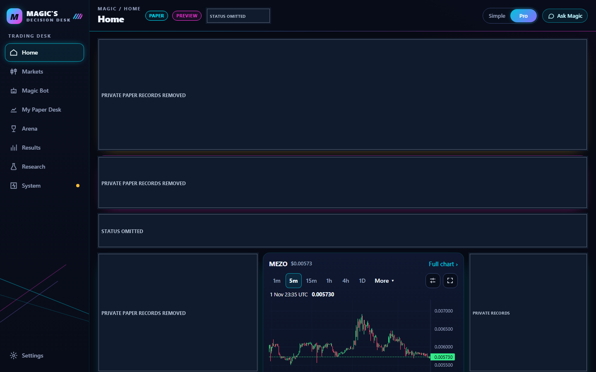
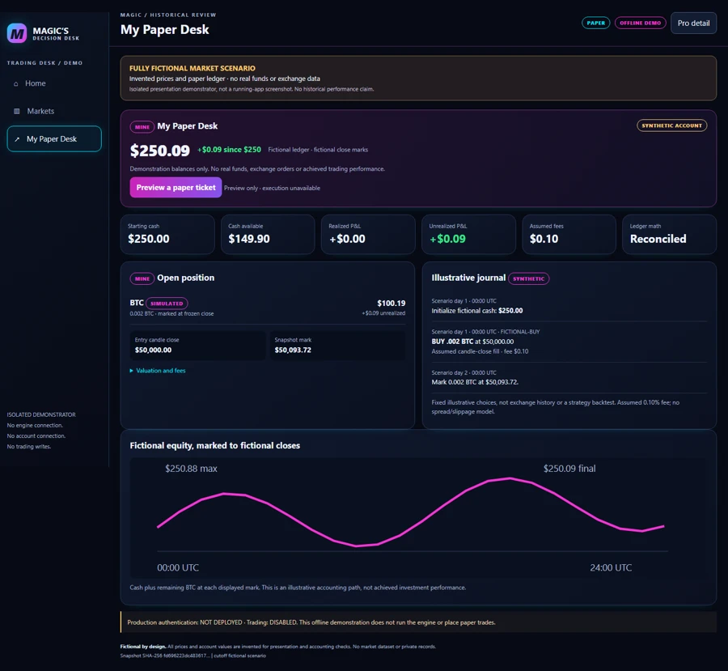

Discover, then qualify
Distinct opportunity lists feed a timestamped observation window and versioned risk policy. A ranked coin is a candidate for evaluation, not an automatic instruction to buy.
02 / MARKET DATA / DECISION SYSTEMS
From market noise to an accountable decision. A paper-only cryptocurrency application that explores the complete path from public market observations to evaluation, modeled execution and review.

CURRENT CHECKPOINT · M7 real-device authentication passed its recorded 12-step plan. M7f hardening is complete in development. Production authentication is NOT DEPLOYED; trading is DISABLED and paper-trade writes are refused. Focused M7f device acceptance and production rollout remain pending.
THE PURPOSE
Reliable trading software needs more than charts. A quote has a time, an intent can be refused, a modeled fill needs assumptions, and an account needs a recoverable record.
Distinct opportunity lists feed a timestamped observation window and versioned risk policy. A ranked coin is a candidate for evaluation, not an automatic instruction to buy.
The $250 starting-account concept supports controlled paper comparisons. Automated bot, personal desk and Arena contest contexts are separate; their balances and outcomes must not be combined.
The M6 desk library records intent, fill or refusal, replay and duplicate prevention. The visible personal ticket cannot write a trade at this checkpoint.
HOW IT FITS TOGETHER
A simplified architecture: responsibilities, not private infrastructure or deployment instructions.
Timestamped observations
Ranking + readiness
Policy + modeled execution
Separate account outcomes
The diagram describes source-backed responsibilities. It does not establish that every path is deployed or physically validated.
THE ENGINEERING CHALLENGE
An intent is not a fill.
Recorded corrections address interrupted intents, repeated requests and a crash gap during account initialization. Refusing an uncertain outcome is safer than inventing a completed trade. Thin-coin candle reconciliation also led the implementation to withhold unsupported derived series.
AI-assisted comparisons are an evaluation concept, not evidence of a profitable or autonomous trading model. Ask MrMagic and Arena screens do not establish a continuously running paid AI service.
VISUAL TOUR
Images are clearly scoped. Open a screenshot to inspect the original-derived, full-resolution copy.

Concept C interface; private historical paper records removed. No real-money account.
ENLARGE ORIGINAL-DERIVED IMAGE ↗
Public market chart and local ticket preview. Private cycle/watchlist records removed; confirmation remains disabled.
ENLARGE ORIGINAL-DERIVED IMAGE ↗
Explicit synthetic test account, read-only, with made-up trades.
ENLARGE ORIGINAL-DERIVED IMAGE ↗
A fictional position state in the read-only M6 desk.
ENLARGE ORIGINAL-DERIVED IMAGE ↗MY PAPER DESK / M6
The screenshot explicitly shows a disposable synthetic account. The read view can expose balances, positions, fees and journal outcomes without authorizing a new trade.
Public Coinbase observations can be live while the bot is stopped. Stored positions are not evidence that rules are actively managing them.
M7’s recorded device plan passed with iPhone Face ID and Windows Hello. M7f adds fresh device authorization, server-side trade refusal and recovery safeguards in development. Production authentication is NOT DEPLOYED; trading is DISABLED.
Read the M7 + M7f milestone ↗Personal paper-trade execution requires a separately implemented and validated boundary. Real-money execution is outside the inspected capability.
STATUS, WITHOUT THE SPIN
| Implemented | Public market-data reads, strategy/policy code and development dashboards. |
|---|---|
| Recorded validation | M6 journal and recovery tests; M7 device plan 12/12 and unauthorized-request refusals 14/14. M7f: 448 tests run, suite OK with one skipped; 31/31 simulated browser checks. |
| Planned | Focused real-device checks for M7f’s changed approvals and emergency lock; approved production rehearsal and rollout; later M8 authenticated paper writes. |
| Not deployed / disabled | Production authentication is NOT DEPLOYED. Trading is DISABLED. The authentication build refuses paper-trade writes; real-money execution is not activated. |
Based on reviewed source and dated implementation records. This portfolio website does not run the application or certify current production state.
THE TAKEAWAY
Reviewed PDF project summaries are publicly available. The underlying mining, trading and fitness applications remain separately managed and are not distributed through this website. The PDFs describe an earlier project checkpoint; the current authentication milestone is documented above.
One-page introduction to public data and paper decisions.
Download PDF · 0.2 MBSix-page introduction to accountable paper-trading systems.
Download PDF · 0.4 MB